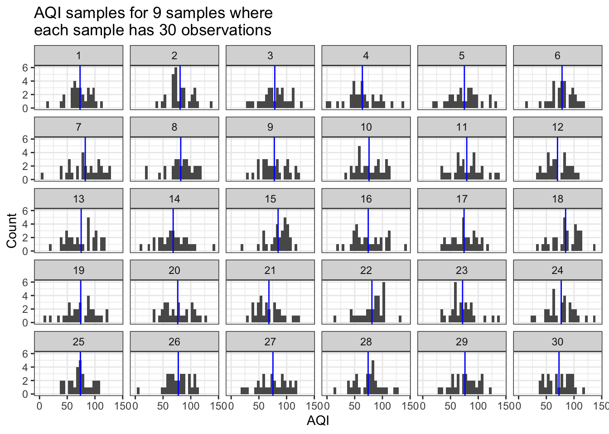
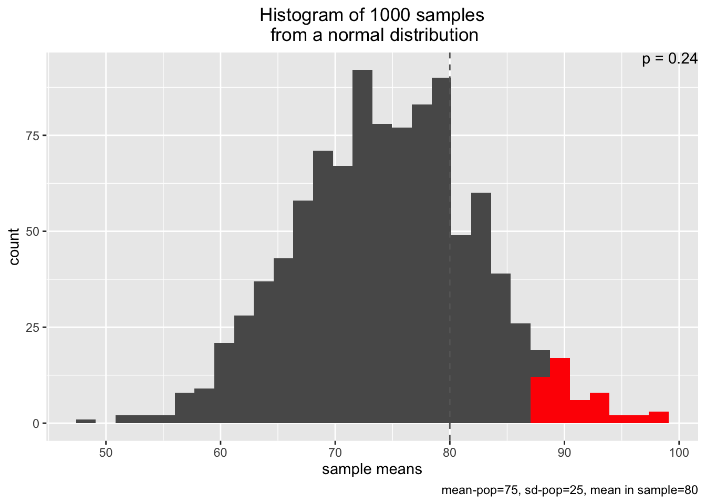

Going forward, we may shift to using RStudio Cloud. The campus’ RStudio Server will eventually be migrated completely to RStudio Cloud, which offers several major advantages.
EA30F21) or from our class repository. The raw version is here which can be easier to copy.Let’s play pretend for a moment. In understanding how to analyze our air quality data, we can take advantage of a powerful tool from computing: simulating our data.
What we are going to do here is pretend:
Below, let’s say we live somewhere where the mean AQI is 75 and the standard deviation (a.k.a. “sd”) is 25 AQI points. In this first example, we will also assume that the distribution of AQI values in Pretend City, USA is roughly normal. Standard deviation tells us how much the data are spread out from the mean value (higher sd –> more spread; lower sd –> less spread). A Normal distribution is the familiar “bell-shaped” curve.
We’re going to assume that we took 30 distinct measurements of air quality. What happens when we repeat our observations of air quality 9 times in Pretend City?
In the plots below, each of the sub-plots is one of the 9 repeated samples. Each sample has 30 measurements. And the AQI values that compose each sample come from a normal distribution with a mean AQI of 75 and an sd of 25. The blue line shows us the mean value of the AQI values in each sample.
sim_AQI_data(true_mean=75, true_sd=25, n_obs=30, how_many=9) # trial 1
What do we observe in the plot above?
How do things change if we increase the number of observations or the number of samples? Let’s try while keeping the mean and sd constant. We’ll specify that each sample has 50 observations and we ran 20 samples.
sim_AQI_data(true_mean=75, true_sd=25, n_obs=50, how_many=20) # trial 2What do you see now? How have things changed? Where are those sample means (blue lines) located in the first vs. the second plot? Do you see more or less variation in the sample means between trials 1 and 2?
What happens when you change the standard deviation along with the number of observations and number of samples? Try it yourself in the console with:
sim_AQI_data(true_means= , true_sd= , n_obs= , how_many= )
You’ll have to provide your own values for the true mean and sd for AQI in Pretend City, the number of samples you will run (how_many), and the number of observations (n_obs) of AQI data you’re making in each sample.
Now we’ve seen how we can calculate means for many different samples, where each sampling regime has different numbers of observations. Let’s take that forward to think about how likely or unlikely any given sample is, when we have some assumption about our world and the data we’ve gathered.
In this case, we are shifting from focusing on the individual data for each sample (gray bars in previous plots) to the distribution of mean values (blue lines in previous plot) across samples. Recall that the mean values are always clustered together more tightly than any individual observation. And in fact, even if our data is really non-normal, we would expect that the distribution of mean values should become more and more like the normal distribution. This expectation comes from the Central Limit Theorem. Finally, the mean for a set of numbers is a type of statistic.
We’re going to shift a bit mentally. Instead of our how_many samples, each of which had n_obs, we’re going to think about how likely one sample would be in light of an expected distribution of mean values for AQI.
In the function below, we are going to say that we have a sample of n=10 observations and its mean is sample_mean=80. We are also going to provide some information about our universe of possible AQI mean values by specifying the mean=75 and sd=25, and that we are gleaning our distribution of mean values from a larger universe of 1000 n_samples.
Now in the plot below, the gray bars are the sample means for each of n_samples; this is basically the same as if we plotted the distribution of our blue (mean) lines from the plots above. The vertical dashed line is our observed sample_mean. And the p=... text tells us the probability of observing our sample mean from this universe of possible AQI mean values. The red bars are telling us an added bit of information - namely, the area for our universe of AQI values that is above the 95% probability threshold. That is, 95% of the mean AQI values are smaller than these values in red.
simu_p(n_samples = 1000, mean=75, sd=25, n=10, distribution="normal", sample_mean=80)
What happens when you observe a larger sample mean? Keep all of the values the same but amp up sample_mean to 90.
simu_p(n_samples = 1000, mean=75, sd=25, n=10, distribution="normal", sample_mean=90)
What happens when the standard deviation for the “true” mean AQI value is larger?
simu_p(n_samples = 1000, mean=75, sd=40, n=10, distribution="normal", sample_mean=80)
What happens when the number of observations in each sample is larger? We’ll keep all of the values the same but increase n to 20.
simu_p(n_samples = 1000, mean=75, sd=25, n=20, distribution="normal", sample_mean=80)
Finally, what happens when the number of observations in each sample is larger and we see a larger sample mean?
simu_p(n_samples = 1000, mean=75, sd=25, n=20, distribution="normal", sample_mean=90)
What we’ve done above is find the probability of observing our sample mean under a variety of different conditions for an underlying distribution of mean AQI values (with a true mean centered at mean in the simu_p function). With this insight, we can extend this approach to formally assess whether our observed data are consistent with our hypothesis.
In statistics (specifically, frequentist statistics), we often denote a null hypothesis with the notation, \(H_0\). For example, in the cases above, our \(H_0\) could have been that the true mean AQI in Pretend City was 75. We could specify an alternative view of the world, often denoted \(H_a\). Under our alternative hypothesis, \(H_a\), we would state that the true mean of AQI is not (or is greater than) 75.
In the last trial where we specified simu_p(n_samples = 1000, mean=75, sd=25, n=20, distribution="normal", sample_mean=90), we saw a very small probability (a.k.a. \(p\)-value), often less than 0.005. That is a really tiny probability!
Such a small probability indicate that our sample is quite unlikely given the null hypothesis for AQI in Pretend City. That equates to a less than 5 in 1000 chance of seeing our data. These results are inconsistent with \(H_0\), so we reject \(H_0\) in favor of \(H_a\), that the true mean AQI is greater than 75. We’ve done a form of statistical inference here!
More broadly, when a \(p\)-value is smaller than some cutoff, we describe the results as statistically significant. That means that the data are so inconsistent with the expectations from \(H_0\) that we reject the null hypothesis. But what is this cutoff? Historically, many scientists have used a significance level of \(\alpha=0.05\). That is, if our results would occur less than 5% of the time given \(H_0\), then we reject the null. [Sidebar: What would happen if we increased \(\alpha=0.1\) or decreased it to \(\alpha=0.01\)? Would our statistical inference be more or less conservative (e.g. tendency to not reject \(H_0\))?]
Let’s start off with the final sample mean of 90 AQI, a standard deviation of 25, and a sample size of 20 observations. We should recognize that our observed mean may not be the same as the population mean. How can we account for our uncertainty in estimating the true mean AQI from our sample mean? We may want to specify some numerical range of values that seems reasonable.
It turns out that we can calculate what’s known as a confidence interval (CI) for our data. A CI presents our statistic and an upper and lower bound, based on some probability value. For instance, a 90% CI means that if we repeated our measurements for 100 samples, 90 of the sample means would be found within our interval. If we increase the probability to 95%, we will end up with a wider confidence interval so that we capture 95 out of the 100 sample means, or 950 out of the 1000 sample means.
We’ll calculate a 95% CI for our mean AQI below. We do so by taking the sample mean and adding (or subtracting) \(t_{df} \times SE\). What is \(t_{df}\)? \(_{df}\) is the degrees of freedom for our calculation, given by \(n-1\) or 19 in this case. \(t\) stand’s for Student’s t-distribution, which is a version of the bell-shaped curve normal distribution with wider tails (which accounts for more uncertainty). What is SE? It is short for standard error, and it is \(\frac{sd}{\sqrt(n)}\) or \(\frac{25}{\sqrt(20)}\).
samp_mean <- 90 # our sample mean
samp_sd <- 25 # our sample standard deviation
samp_n <- 20 # our sample number of observations
samp_df <- samp_n - 1 # we are estimating 1 statistic, so we lose 1 degree of freedom from our sample size
samp_se <- samp_sd / sqrt(samp_n) # calculating our standard error
AQI_95_CI_min <- samp_mean - qt(p=0.975,df = samp_df)*samp_se # lower limit
# why p=0.975?
# we take 1 - (1-0.95)/2 to get a symmetric distribution, equivalent to 0.025 and 0.975,
# which means that we have 0.95 in between these two values
AQI_95_CI_max <- samp_mean + qt(p=0.975,df = samp_df)*samp_se # upper limit
# Print out values:
paste0("The 95% CI for mean AQI is [",signif( AQI_95_CI_min, 3),",",signif(AQI_95_CI_max,3),"].",collapse="") # print output; use signif to round to 3 significant figures## [1] "The 95% CI for mean AQI is [78.3,102]."FMI for confidence intervals, please check out this Census Bureau explainer (not required for the class; optional reading in case this is of interest).
When we want to compare mean values across two populations, we will often turn to a t-test. In our class, that could look like comparing the mean AQI values measured at one dining hall versus another. Equivalently, it could be mean \(O_3\) levels or \(CO_2\) or \(PM_{2.5}\) across the gym versus the Farm.
In a t-test, we begin with an assumption that the means for the two groups are the same. That is, \(H_0: \mu_1 = \mu_2\). What we have, on the other hand, is a set of sample means, \(\bar{x}_1\) and \(\bar{x}_2\) (or \(\bar{x}_{farm}\) and \(\bar{x}_{gym}\), etc.). Our question is - are the sample means so clearly different that we would reject \(H_0\)? Our \(H_a\) could be that \(\bar{x}_1 \neq \bar{x}_2\) or \(\bar{x}_1 < \bar{x}_2\) or \(\bar{x}_1 > \bar{x}_2\).
Let’s begin by using two datasets from the farm and the roadside, collected by Team Fresno.
farmDF <- googlesheets4::read_sheet(ss="https://docs.google.com/spreadsheets/d/1Tezs6c3JoCtrdKysVZ02-G7fETLll--v0ZX0Jo9OaB0/edit?usp=sharing",sheet="Farm_Clean") # storing the clean Farm data in farmDF
roadDF <- googlesheets4::read_sheet(ss="https://docs.google.com/spreadsheets/d/1GIJL9RvfXFiES_bA6rqdpFEX8V24FxX0dfSYmSGTCfw/edit?usp=sharing",sheet="Clean_Roadside") # storing the clean roadside data in roadDFGreat! We’ve pulled in the two clean datasets. Now, in some cases, what you may notice is that the default PL Air column names are not great for working with in R. They have things like spaces, % signs, and other types of issues that make them less than ideal as column names. We’re going to modify those column names below.
name_vec <- c("Lat","Lng","Date","tSec","Pressure_mBar","TempC","RelHumPerc","Lux",
"OzonePPB","MeanOzonePPB","CO2ppm","MeanCO2ppm","PM1ugm3","MeanPM1",
"PM2_5ugm3","MeanPM2_5ugm3","PM10ugm3","MeanPM10ugm3","AQI",
"HeatIndexC","DewPointC") # creating a vector with cleaner column names
names(farmDF) <- name_vec # changing the column names for farmDF
names(roadDF) <- name_vec # changing the column names for farmDFRemember, we can always take a quick look at our data by using View( head(farmDF) ) or farmDF %>% head() %>% View().
Let’s say we’re interested in comparing mean AQI values across the two sites. It’s always beneficial to see what the mean values are for our data in the first place! Let’s get a sense of those values by running:
print("Summary of AQI values for farm")## [1] "Summary of AQI values for farm" # Here, we're going to use more modern R "syntax" (grammar/commands)
farmDF %>% # feed farm DF forward into the next function
dplyr::select(AQI) %>% # pulling out the column AQI
summary() # display the summary of this value ## AQI
## Min. :61.30
## 1st Qu.:71.82
## Median :76.03
## Mean :75.60
## 3rd Qu.:80.23
## Max. :90.75print("Summary of AQI values for road")## [1] "Summary of AQI values for road"summary( roadDF$AQI ) # a different way to call summary using old-school R ## Min. 1st Qu. Median Mean 3rd Qu. Max.
## 65.51 73.92 78.13 78.28 82.33 92.85 # we extract the column AQI from roadDF by using the $ operator (?`$` FMI)
# and that is fed into the command summary()We see that the road data had a higher AQI on average than the farm data. (What does AQI itself tell us again?) We may now suspect that the mean AQI values are not the same between the Farm and roadside. We can test that with a t-test.
Here, I will show how you can perform a t-test of the AQI values for these two datasets to see if the sample means are likely the same (\(H_0\)) or not (\(H_a\)).
my_t_test <- t.test(roadDF$AQI, farmDF$AQI) # run a t-test and store it in my_t_test
my_t_test # print out information about the t-test##
## Welch Two Sample t-test
##
## data: roadDF$AQI and farmDF$AQI
## t = 7.5515, df = 1245.6, p-value = 8.289e-14
## alternative hypothesis: true difference in means is not equal to 0
## 95 percent confidence interval:
## 1.979843 3.369633
## sample estimates:
## mean of x mean of y
## 78.27921 75.60447The test produces a variety of values. We are most interested in the row starting with t =.
t = 49.15 means that the t-statistic for our 2-sample mean comparison was 49.15df = 758.3 means that we had over 758 degrees of freedomp-value < \(2.2*10^{-16}\) means that our p-value was really tiny, namely 0.00000000000000022.From the test above, we observe that the \(p\)-value of \(2.2*10^{-16}\) is (waaaay) less than \(\alpha=0.05\), the conventional significance threshold. We would conclude that our means are statistically significantly different and reject the null hypothesis in favor of the alternative hypothesis that the means are not the same.
You may now be wondering – but how would I perform a t-test if I had reason to suspect an alternative hypothesis for \(H_a\), namely that the road AQI was higher than the farm AQI? \(H_0\) is unchanged (mean AQI is the same across both sites). Below, we’ll run a t-test where \(H_a\) is that AQI is greater at the roadside than at the Farm.
one_sided_t_test <- t.test(roadDF$AQI, farmDF$AQI, alternative = "greater") # specify a different H_a: road AQI > farm AQI
one_sided_t_test # display test results##
## Welch Two Sample t-test
##
## data: roadDF$AQI and farmDF$AQI
## t = 7.5515, df = 1245.6, p-value = 4.145e-14
## alternative hypothesis: true difference in means is greater than 0
## 95 percent confidence interval:
## 2.091697 Inf
## sample estimates:
## mean of x mean of y
## 78.27921 75.60447Note in the t.test command above, that alternative = "greater" is how we are specifying an \(H_a\) that the first sample (roadDF$AQI) is greater than the second sample (farmDF$AQI). Alternatively, you could have the same \(H_a\) but specify that farmDF$AQI is less than roadDF$AQI.
one_sided_t_test <- t.test(farmDF$AQI, roadDF$AQI, alternative="less") # farm AQI < road AQI
one_sided_t_test # display test##
## Welch Two Sample t-test
##
## data: farmDF$AQI and roadDF$AQI
## t = -7.5515, df = 1245.6, p-value = 4.145e-14
## alternative hypothesis: true difference in means is less than 0
## 95 percent confidence interval:
## -Inf -2.091697
## sample estimates:
## mean of x mean of y
## 75.60447 78.27921In both of these one-sided tests, we would reject \(H_0\) – the means are statistically significantly different in favor of the alternative hypothesis that roadside AQI is higher than the Farm AQI.
In case you have any curiosity about learning more about t-tests, here is some material (not required for this course). FMI about t-tests here for the curious - see section 20.3 in particular. This textbook is co-authored by Pomona’s very own Prof. Jo Hardin.
Let’s say that your PL Air data come from three or more distinct populations/sites. How would you compare them? You can use a method called Analysis of Variance (ANOVA). ANOVA lets you compare three or more sets of data. Despite “variances” in the name, under ANOVA we are comparing the spread of values across datasets (where each dataset is a population or site) to see if the means are significantly different.
Here, we’ll use three datasets from Team Bird’s Eye. If you ever need to clean up your iPhone data, you can follow the steps from last week here in the iOS Data section.
df3 <- read_sheet(ss="https://docs.google.com/spreadsheets/d/1P1orGfuKIG2E4IuCoE1HKyPS09d6x4pu_OlV3IWGPFY/edit?usp=sharing",sheet="Clean") # read in the Clean datasheet from this Googlesheet and store it in df3
df2 <- read_sheet(ss="https://docs.google.com/spreadsheets/d/1V79fkoO-CoHtiqtLKYnVc1MTwuyonhRoWNJfaOQChKU/edit?usp=sharing",sheet="Clean") # read in another Googlesheet's Clean sheet and store in df2
df1 <- read_sheet(ss="https://docs.google.com/spreadsheets/d/1iznRXt4vFcFlkLCRNHHAEXG19CAPMc6r14K9oLoiDkY/edit?usp=sharing",sheet="Clean") # same as above, but store another Googlesheet's Clean sheet as df1Instead of repeating the type of procedure above where we directly compared different data sheets, here we will need to join up our data and find some way to separate them into groups. I will do that using the Date time stamps.
birdDF <- bind_rows(df1,df2,df3) # combine the 3 data sets row by row
birdDF <- birdDF %>% na.omit() # remove rows that are all missing values
names(birdDF) <- name_vec # we will rename the columns using name_vec from beforeOne really cool thing we can do is see the total time elapsed in our data by running tail(birdDF$Date, 1) - head(birdDF$Date, 1)–we’d see that these data span 48.34 minutes, or about 48 minutes and 20 seconds.
Originally, the data came from three locations at varying distances to the Pomona gym. How can we now separate the data into different buckets to compare means across levels of distance? We can use those timestamps to our advantage. We’re going to define new categories based on 20 minute increments in our data
dist_labels <- c(96.6, 207, 300) # the distance classes to the gym associated with the time slices
birdDF <- birdDF %>%
mutate(Distances = cut(birdDF$Date,breaks="20 min",labels=dist_labels)) # slice the date times into categories based on 20 minute intervals and label each slice based on the distance labels, store this variable in a new column called Distances using the command, mutate
# Here, we can see the counts of each categorical break by time
# How many observations does each grouped set of data have?
birdDF %>% # feed birdDF forward
dplyr::select(Distances) %>% # pull out the column Distances; equivalent to birdDF$Distances
table() # show us the counts by each unique value in Distances## .
## 96.6 207 300
## 827 733 560# We can also see the mean values for AQI for the different distances this way
birdDF %>% # feed birdDF forward to the next function
group_by(Distances) %>% # bucket the data into different Distance bins
summarize(minAQI = min(AQI), medianAQI = median(AQI), meanAQI = mean(AQI), maxAQI = max(AQI)) # produce a data summary based on the AQI values observed in each distance class## # A tibble: 3 x 5
## Distances minAQI medianAQI meanAQI maxAQI
## <fct> <dbl> <dbl> <dbl> <dbl>
## 1 96.6 67.6 82.3 82.4 95.0
## 2 207 67.6 80.2 80.4 95.0
## 3 300 65.5 78.1 78.4 88.6Now, we will run the ANOVA test on our data. We will compare the AQI values for the three distance classes of 96.6, 207, and 300 feet from the gym. We do so using these commands:
aov_test <- aov( lm(AQI~Distances, data=birdDF )) # perform an ANOVA test of AQI as a function of Distances, which are both found in the object birdDF and store it in aov_test
summary( aov_test ) # show our output for aov_test using the command summary( ); note that you don't need to use summary( ) for the t-test output though ## Df Sum Sq Mean Sq F value Pr(>F)
## Distances 2 5420 2709.9 81.5 <2e-16 ***
## Residuals 2117 70387 33.2
## ---
## Signif. codes: 0 '***' 0.001 '**' 0.01 '*' 0.05 '.' 0.1 ' ' 1The ANOVA test produces a table with different outputs. We are most interested in the row corresponding to our variable of interest, Distances.
In that row:
Df is the number of parameters we were estimating, minus 1 (3 means)Sum Sq is total sum of squares of all values from the overall mean for all the data (this is not important for our purposes in this class)Mean Sq is the mean value for the sum-of-squares (again, not important for us)F value is a different test statistic, the F-statistic (not important for us at present)Pr(>F) shows us the p-value associated with the F-statistic (important for us). Here, the p-value is again very small–almost zero.Based on the small p-value, we would reject the null hypothesis, \(H_0\), that the mean AQI across all of the sites was the same. We observe significant differences in mean AQI across the three locations at different distances to the gym.
We may be curious about which distances ultimately have different AQI values. Here is one way to do this analysis using a method known as Tukey’s Honestly Significant Difference (HSD) test, named after the statistician Prof. John Tukey. Among many other contributions, Prof. Tukey also helped develop the box plot, one very helpful way of visualizing distributions of data. We’ll learn more about box plots later on in this class.
The Tukey HSD outputs a table of p-values as well as the 95% confidence intervals for the lower and upper bound of the differences between the means of two groups. If \(p_{adj} < \alpha\) where \(\alpha\) typically is 0.05, then we conclude that there is a significant difference between the means of those two groups. So below, we would conclude that AQI is lower at 207 feet from the gym than at 96.6 feet, and that it is lower at 300 feet than 207 feet, and that it is lower at 300 feet than 96.6 feet away from the gym.
TukeyHSD( aov_test,"Distances") # tell the command the name of your ANOVA model (aov_test) and the column used to categorize the data (Distances)## Tukey multiple comparisons of means
## 95% family-wise confidence level
##
## Fit: aov(formula = lm(AQI ~ Distances, data = birdDF))
##
## $Distances
## diff lwr upr p adj
## 207-96.6 -2.018234 -2.704280 -1.332189 0
## 300-96.6 -3.999786 -4.739880 -3.259692 0
## 300-207 -1.981552 -2.740564 -1.222540 0In the TukeyHSD output, the values in the table correspond to:
diff: the difference between one group’s mean and anotherlwr: the lower limit for the confidence interval of the difference between meansupr: the upper limit for the CI of the difference between meansp adj: the p-value adjusted for multiple comparisons; this takes into account the fact that statistical tests themselves are probabilistic, and the more tests we run, the more we’d expect to get a falsely significant result just by chance.If you would like to learn more about ANOVA tests and Tukey HSD, please refer to these materials (not necessary for this course; provided in case it is of interest).
We may be thinking – but wait, couldn’t we directly model the relationship between distance and AQI? Indeed we can, and we can use linear regression to do so. Linear regression is used to model the relationship between a dependent (a.k.a. response) variable, which we will denote \(Y\), and one or more independent (a.k.a. explanatory) variables denoted as \(X_1, X_2, X_3, \dots, X_k\) (representing a total of \(k\) arbitrary independent variables). In the case of the Bird’s Eye PL Air data, the response variable \(Y\) is AQI and the independent variable \(X\) is Distances.
Using a linear model, we are going to fit a line that describes the relationship between \(X\) and \(Y\). Recall that the equation for a straight line is:
\(Y = b + mx\)
In linear regression, we are estimating:
\(Y = \beta_0 + \beta_1 X_1\)
Equivalently, in the case of our butterfly data, we are estimating:
\(\text{AQI} = \beta_0 + \beta_1 \text{Distances}\)
Note that you can interpret \(\beta_0\) to be the same as \(b\) from the equation for a straight-line. That is, \(\beta_0\) is the y-intercept: it tells us what the value of \(Y\) would be when \(X_i = 0\) for all of the independent variable(s). In this case, we only have 1 independent variable, so \(\beta_0\) tells us what we would expect AQI to be when distance (to the gym) is equal to 0. \(\beta_1\) is the same as \(m\): it tells us the slope of the relationship between \(Y\) and \(X_1\).
Below, we will use the lm command (short for linear model) in R to estimate the coefficients, \(\beta_0\) and \(\beta_1\) for the data. lm performs a specific type of linear regression, which is known as “ordinary least squares” (OLS for short) regression.
### First, we need to convert Distances from a factor (categorical)
### data to numeric data
birdDF <- birdDF %>% # feed birdDF forward to next function/command
mutate(Distances = as.numeric(Distances)) # make Distances a number instead of a factor using mutate
### Running the lm command
AQImodel <- lm(AQI ~ Distances, data=birdDF)
### Showing the coefficient estimates
summary(AQImodel)##
## Call:
## lm(formula = AQI ~ Distances, data = birdDF)
##
## Residuals:
## Min 1Q Median 3Q Max
## -14.8175 -4.4043 -0.1983 4.1095 14.5227
##
## Coefficients:
## Estimate Std. Error t value Pr(>|t|)
## (Intercept) 84.4324 0.3192 264.48 <2e-16 ***
## Distances -2.0011 0.1567 -12.77 <2e-16 ***
## ---
## Signif. codes: 0 '***' 0.001 '**' 0.01 '*' 0.05 '.' 0.1 ' ' 1
##
## Residual standard error: 5.765 on 2118 degrees of freedom
## Multiple R-squared: 0.07149, Adjusted R-squared: 0.07105
## F-statistic: 163.1 on 1 and 2118 DF, p-value: < 2.2e-16What have we done here?
First, we have run a linear regression model relating AQI to Distances using the syntax AQI ~ Distances where the ~ means “AQI is distributed according to Distances [to the gym]”.
We have stored the output of the linear regression in the object AQImodel.
Finally, we have used the summary command on the AQImodel object to display information about the estimated values in the model, which include our coefficients \(\beta_0\) ((Intercept)) and \(\beta_1\) (Distances).
What do the values in the summary output reveal about the relationship between AQI and distance? We’ll focus on the table in the summary output that begins with Coefficients:.
The coefficients output is copied again here for convenience.
Coefficients:
Estimate Std. Error t value Pr(>|t|)
(Intercept) 84.4324 0.3192 264.48 <2e-16 ***
Distances -2.0011 0.1567 -12.77 <2e-16 ***The Coefficients: table has two rows. Each row corresponds to our two variables: the intercept (\(\beta_0\)) and Distances (\(\beta_1\)).
The Estimate column tells us the estimated values for the \(\beta_0\) and \(\beta_1\) coefficients.
The Std. Error column tells us the standard error of each coefficient, which is a measure of the uncertainty in the estimated value of the coefficient. Basically, when the relationship between \(X_i\) and \(Y\) has a lot of spread, the standard errors will grow larger. On the other hand, when there is a very close relationship between \(X_i\) and \(Y\) (less spread in the data), the standard errors become smaller.
The t-value gives us the t-statistic for each coefficient, which is calculated as Estimate / Std. Error. Effectively, the t value is a measure of how far (in terms of standard deviations) each coefficient is from 0. That is, the t value is a statistic testing whether or not the true value of the coefficient, given our data and model, is likely to be 0 or not.
Finally, Pr(>|t|) shows us the probability value (or p-value) associated with each coefficient in the table. The p-values shown in the Pr(>|t|) column tell us how probable it is that we would observe any value \(\geq\) the coefficient estimate. Given \(\alpha=0.05\), when \(p < \alpha\), we can reject the null hypothesis, \(H_0\). \(H_0\) is that there is no relationship, meaning that \(\beta_i\) for \(X_i\) = 0, between \(X_i\) and \(Y\). Let’s see how this plays out with this example below.
The value for (Intercept) (a.k.a. \(\beta_0\)) tells us that when Distances=0, we would predict that AQI is 84.4 right next to the gym. In and of itself, this intercept is interesting but not super meaningful.
The value for Distances (a.k.a. \(\beta_1\)), which is -2.0 (rounding to 1 or 2 decimal places is usually preferable to presenting a number with many floating points/decimal places), is more interesting. It tells us that as distance increases by 1 foot (Distances + 1), AQI decreases by 2 points. Alternatively, if we move one foot closer to the gym, AQI increases by 2 points. Given the very small \(p\)-value associated with Distances (\(\beta_1\)), we conclude that we can reject the null hypothesis that there is no relationship. These data indicate that there is a significant, negative relationship between AQI and distance, or that AQI decreases significantly with distance to the gym.